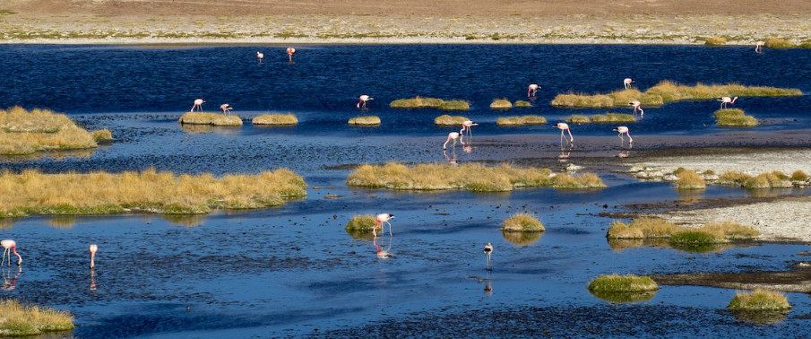
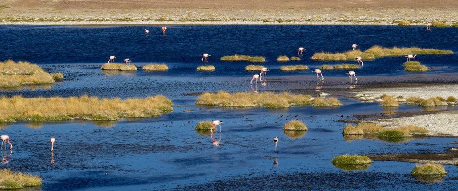

湿地模范
三江平原湿地
1. 生态系统保护：三江平原湿地保护区致力于保护湿地生态系统的完整性和稳定性。通过采取措施限制开发和人类活动，有效减少了湿地生态系统的破坏和退化。
2. 鸟类保护：三江平原湿地是中国重要的候鸟栖息地之一，拥有丰富的鸟类资源。保护区积极开展鸟类监测和保护工作，建立了一系列的保护区和鸟类观测站，提供了安全的栖息环境和繁殖场所，促进了鸟类的繁衍和迁徙。
3. 湿地恢复与修复：三江平原湿地保护区注重湿地的恢复与修复工作。通过恢复湿地植被、改善水质、修复湿地水文等措施，有效改善了湿地的生态功能和水文条件。
4. 社区参与与教育：三江平原湿地保护区注重社区居民的参与和意识提升。通过开展湿地教育活动、培训工作人员和志愿者，提高了公众对湿地保护的认识和重视程度。
2. 鸟类保护：三江平原湿地是中国重要的候鸟栖息地之一，拥有丰富的鸟类资源。保护区积极开展鸟类监测和保护工作，建立了一系列的保护区和鸟类观测站，提供了安全的栖息环境和繁殖场所，促进了鸟类的繁衍和迁徙。
3. 湿地恢复与修复：三江平原湿地保护区注重湿地的恢复与修复工作。通过恢复湿地植被、改善水质、修复湿地水文等措施，有效改善了湿地的生态功能和水文条件。
4. 社区参与与教育：三江平原湿地保护区注重社区居民的参与和意识提升。通过开展湿地教育活动、培训工作人员和志愿者，提高了公众对湿地保护的认识和重视程度。
大亚湾湿地
1.生态系统保护：大亚湾湿地保护区采取了一系列措施来保护湿地生态系统的完整性和稳定性。通过限制开发和人类活动，减少了湿地生态系统的破坏和退化。同时，保护区还注重恢复和保护湿地植被，改善水质和水文条件，以提高湿地的生态功能。
2. 物种保护：大亚湾湿地是许多珍稀濒危物种的栖息地，包括候鸟、水生植物和动物等。保护区积极开展物种监测和保护工作，建立了一系列的保护区和观测站，提供了安全的栖息环境和繁殖场所，促进了物种的繁衍和保护。
3. 社区参与与教育：大亚湾湿地保护区注重社区居民的参与和意识提升。通过开展湿地教育活动、培训工作人员和志愿者，提高了公众对湿地保护的认识和重视程度。同时，保护区还与当地居民合作，推动可持续的利用湿地资源，促进当地社区的发展。
2. 物种保护：大亚湾湿地是许多珍稀濒危物种的栖息地，包括候鸟、水生植物和动物等。保护区积极开展物种监测和保护工作，建立了一系列的保护区和观测站，提供了安全的栖息环境和繁殖场所，促进了物种的繁衍和保护。
3. 社区参与与教育：大亚湾湿地保护区注重社区居民的参与和意识提升。通过开展湿地教育活动、培训工作人员和志愿者，提高了公众对湿地保护的认识和重视程度。同时，保护区还与当地居民合作，推动可持续的利用湿地资源，促进当地社区的发展。
南湖湿地公园
1.生态系统保护：南湖湿地公园采取了一系列措施来保护湿地生态系统的完整性和稳定性。通过限制开发和人类活动，减少了湿地生态系统的破坏和退化。同时，公园还注重恢复和保护湿地植被，改善水质和水文条件，以提高湿地的生态功能。
2. 物种保护：南湖湿地公园是许多珍稀濒危物种的栖息地，包括候鸟、水生植物和动物等。公园积极开展物种监测和保护工作，建立了一系列的保护区和观测站，提供了安全的栖息环境和繁殖场所，促进了物种的繁衍和保护。
3.旅游与教育：南湖湿地公园注重公众的参与和意识提升。通过开展湿地教育活动、提供生态导览服务等，提高了公众对湿地保护的认识和重视程度。同时，公园还提供了游览和休闲服务，吸引了大量游客，促进了当地旅游业的发展。
2. 物种保护：南湖湿地公园是许多珍稀濒危物种的栖息地，包括候鸟、水生植物和动物等。公园积极开展物种监测和保护工作，建立了一系列的保护区和观测站，提供了安全的栖息环境和繁殖场所，促进了物种的繁衍和保护。
3.旅游与教育：南湖湿地公园注重公众的参与和意识提升。通过开展湿地教育活动、提供生态导览服务等，提高了公众对湿地保护的认识和重视程度。同时，公园还提供了游览和休闲服务，吸引了大量游客，促进了当地旅游业的发展。